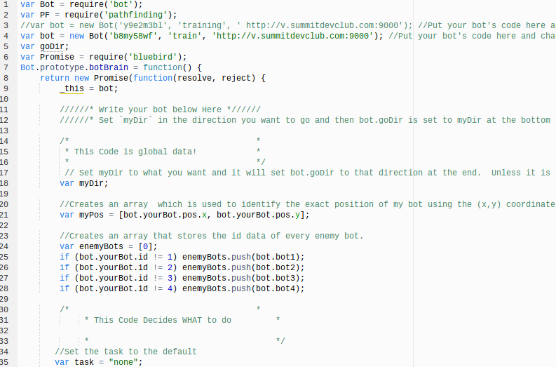
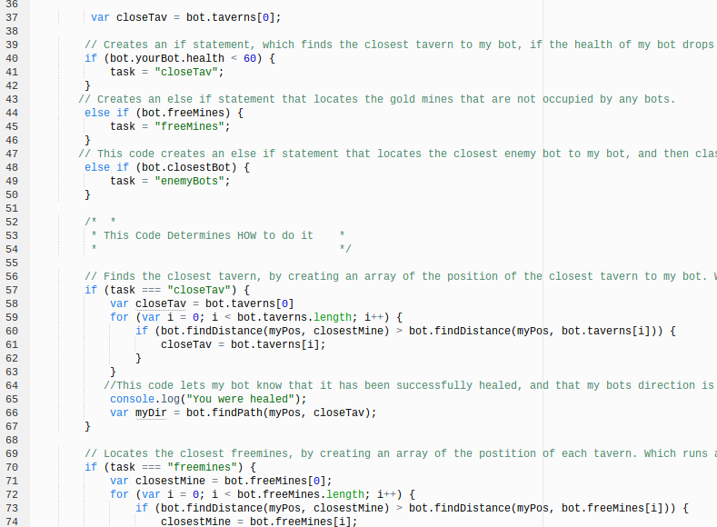
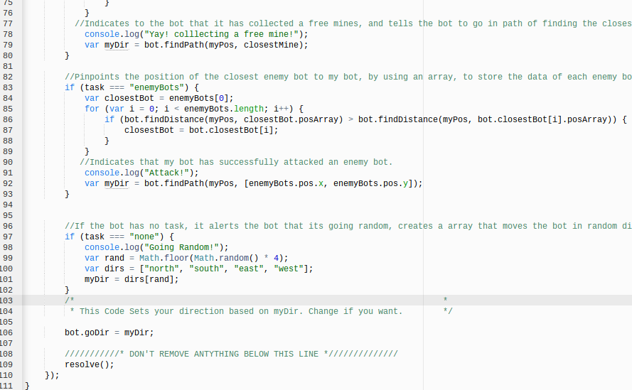
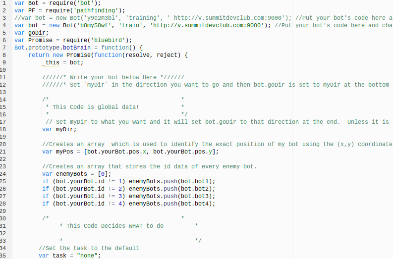
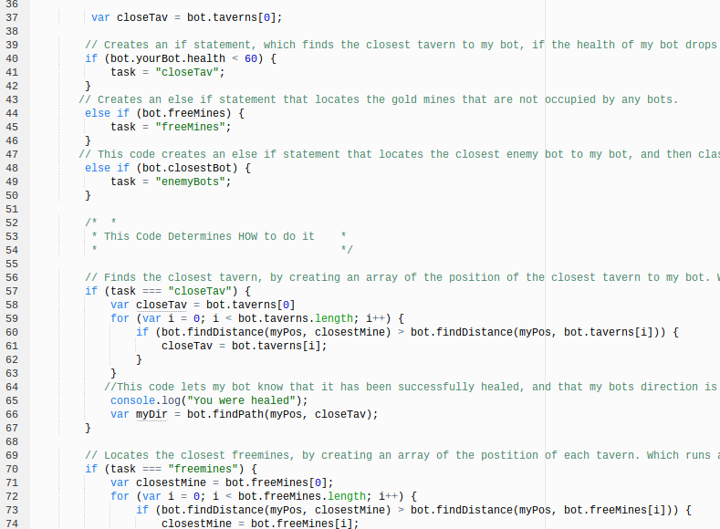
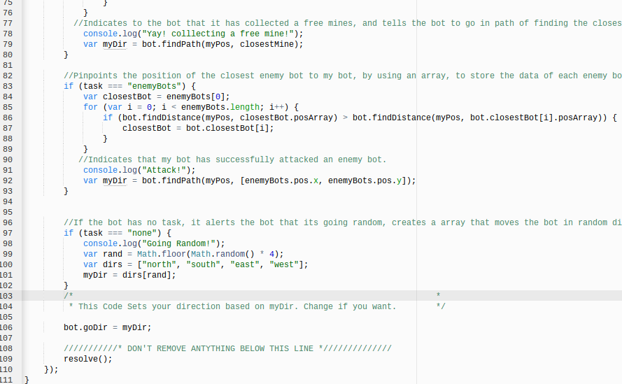

☰ Menu
What is Vindinium?
 Vindinium is a fun, and exciting web based game that is controlled by various commands written in Javascript. The game is played with a total of 4 bots, which are known as “heros.” Each hero is controlled by a person who has programmed, and commanded their bot to do specific, and unique actions in the game. These bots compete on randomly generated maps. The goal of the game is to gain, and steal as many gold mines as possible with the purpose to get the most gold. Each bot has an infinite amount of lives, and 100 health. There are 1200 turns in the entirety of the game, which is 300 turns per player. The bots can choose to attack the other 3 bots, and as a result they can lose health. But they need to be healed, so they go to what are known as taverns, in order to be healed. On top of attacking bots, each bot loses 1 health every turn. If you lose all your health you will die, and then respawn again in the same spot you started at the beginning of the game. In order to win the game you need to gain the most gold mines on the map, to get more coins than all other bots. After the 1200 turns are up, whoever has the most coins is the winner.   
Vindinium is a fun, and exciting web based game that is controlled by various commands written in Javascript. The game is played with a total of 4 bots, which are known as “heros.” Each hero is controlled by a person who has programmed, and commanded their bot to do specific, and unique actions in the game. These bots compete on randomly generated maps. The goal of the game is to gain, and steal as many gold mines as possible with the purpose to get the most gold. Each bot has an infinite amount of lives, and 100 health. There are 1200 turns in the entirety of the game, which is 300 turns per player. The bots can choose to attack the other 3 bots, and as a result they can lose health. But they need to be healed, so they go to what are known as taverns, in order to be healed. On top of attacking bots, each bot loses 1 health every turn. If you lose all your health you will die, and then respawn again in the same spot you started at the beginning of the game. In order to win the game you need to gain the most gold mines on the map, to get more coins than all other bots. After the 1200 turns are up, whoever has the most coins is the winner.   